札幌駅周辺について
北海道札幌の拠点となる「札幌駅（サツエキ）」。
駅ビルには、流行のファッションや絶品グルメ、そしてお土産まで、欲しいもはだいたい揃う。名古屋でいえば名古屋駅（メイエキ）かなって感じ。
駅の南口からは、美しいレンガ造りの「北海道庁旧本庁舎（赤れんが庁舎）」や、札幌のシンボル「時計台」など、歴史を感じるフォトスポットが徒歩圏内に点在。
広大な「大通公園」までは、地下歩行空間（チカホ）を通って移動してみるといいかも。
食べたい。行きたい。を調べておいて、北海道の開拓の歴史に触れるもよし。ラーメンやスープカレー、ジンギスカンやスイーツを求めてふらふらと散策するもよし。
通ぶってサツエキって呼べる位まで散策してみるといいと思います。
ここに紹介する所以外にもいい所はきっとあるので自分で調べると良い。
（※ 値段はもしかしたら間違ってるかもだから自分でちゃんと調べてね）
白い恋人パーク
有料エリア 1200円北海道銘菓「白い恋人」で知られる石屋製菓のお菓子のテーマパーク。
工場見学やスイーツ作り体験、バラが咲く中庭の散策、限定スイーツを楽しめる。
札幌駅からちょっと遠いので、何人かで割り勘してタクシーで行くのがイイかも。僕は割と楽しめたけど、しょぼいと感じる人もいると思う。
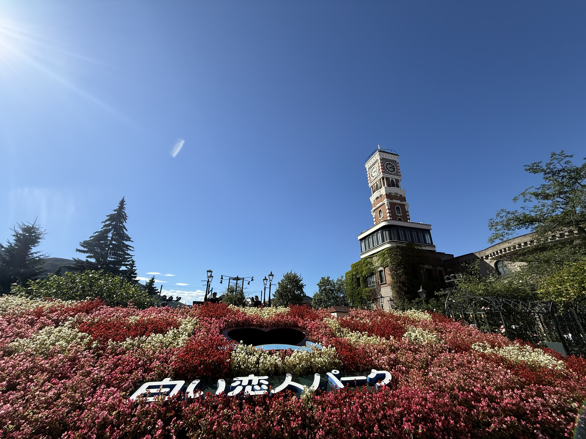
真ん中のハート型の穴から顔が出せる。顔ハメ記念写真が好きな人はやるといい。
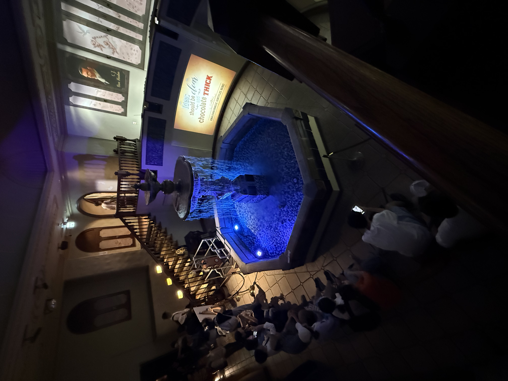
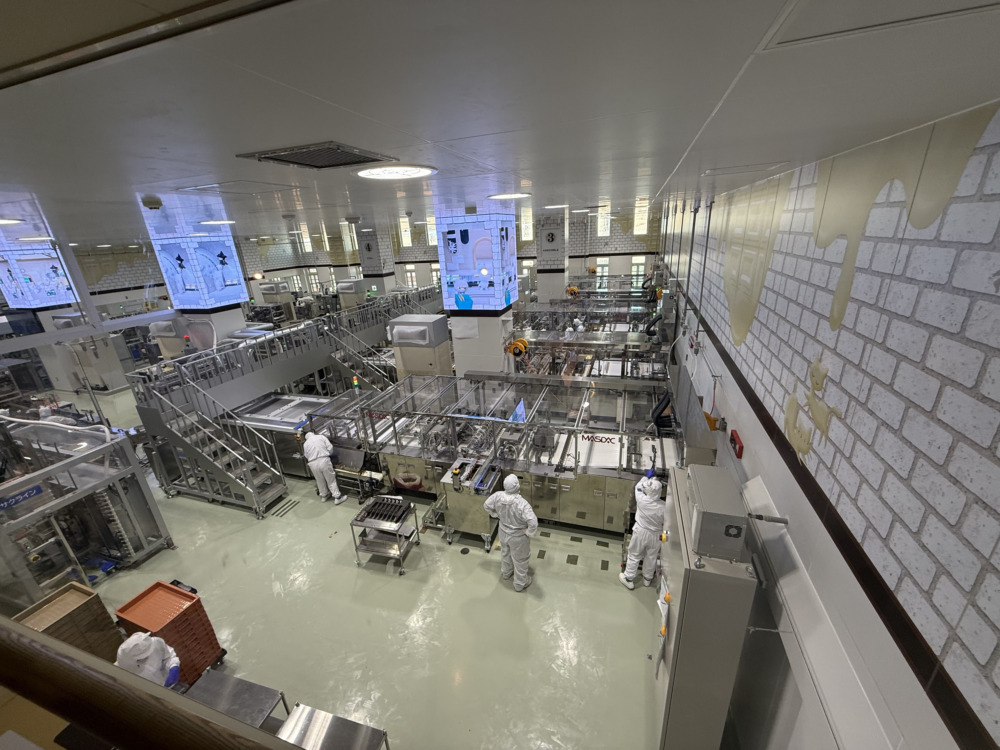
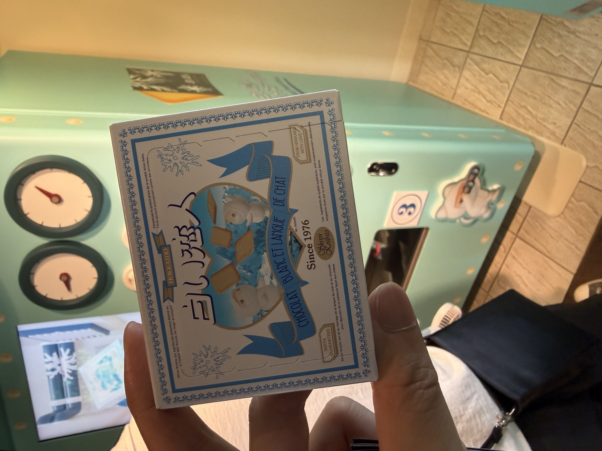
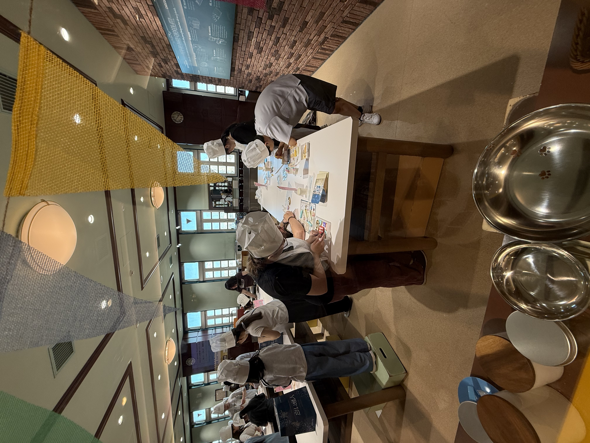
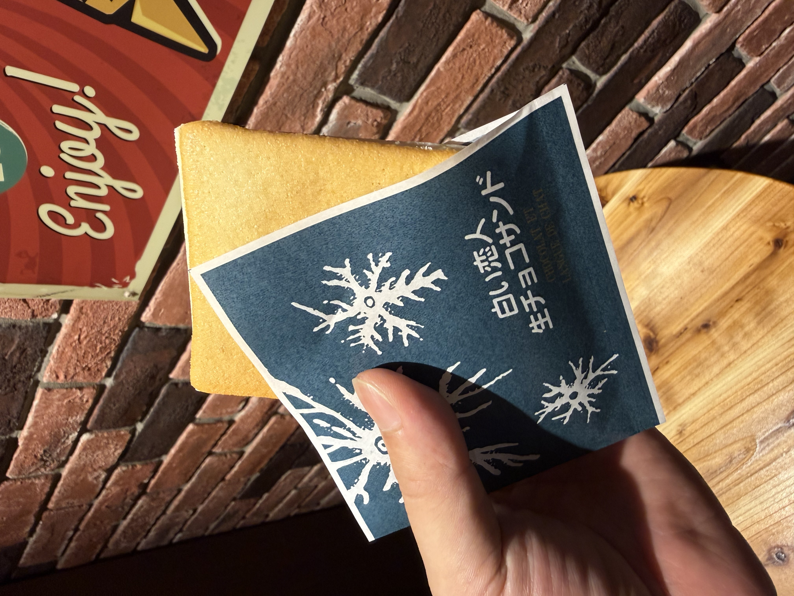
サッポロビール博物館
大人1000円 中高生500円1876年の北海道開拓事業から続く日本で最も歴史のあるビールに関する博物館。ここは札幌駅から２キロくらい。徒歩でもがんばれば行ける距離。札幌駅からバスも出てるっぽい。
北海道遺産のレンガ造りの建物で、ビールの歴史を学べるほか、ここでしか飲めない復刻ビールの試飲や隣接するビール園を楽しめる。（高校生はビール飲んだらダメなんだけど、ジンギスカンは食べてもいいね）
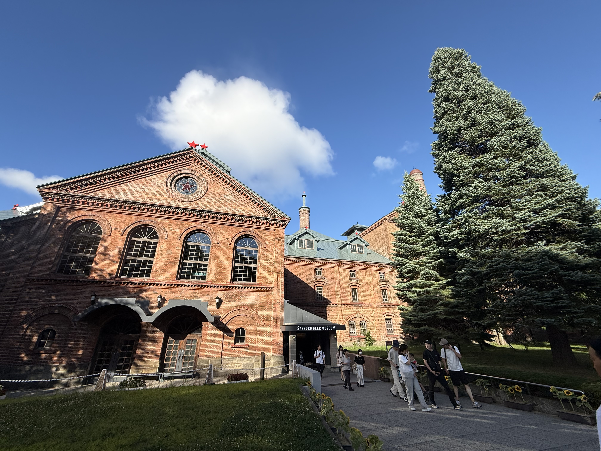
やっぱ昔の建物といえば赤レンガだよなあ。

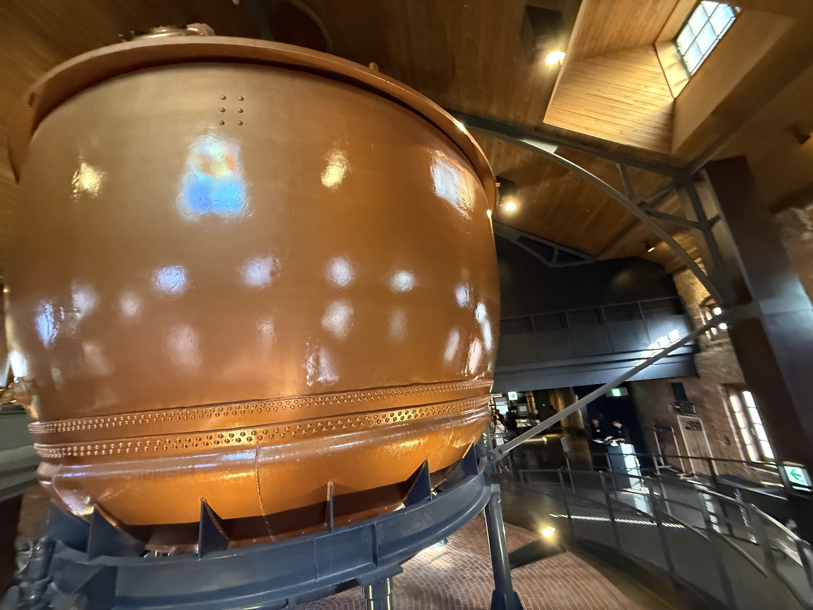
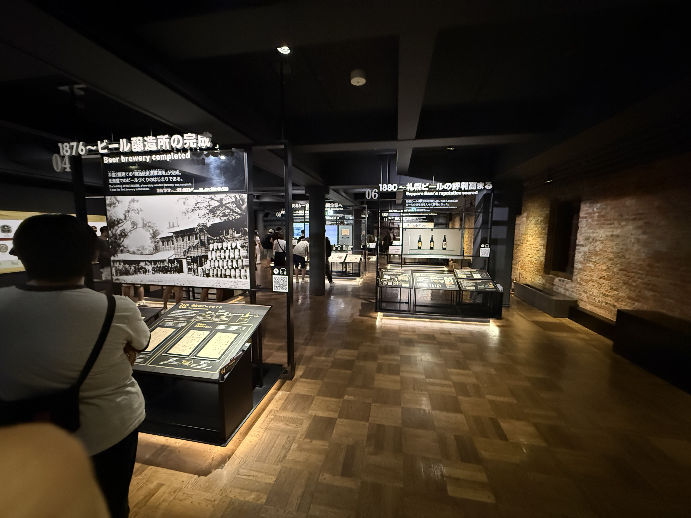

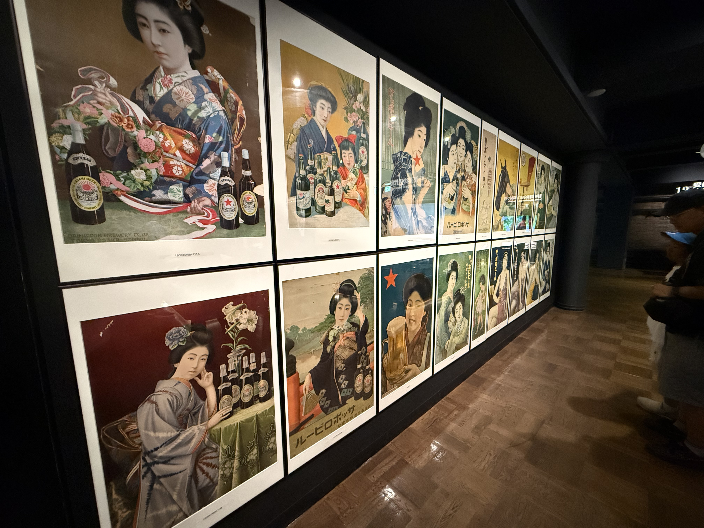
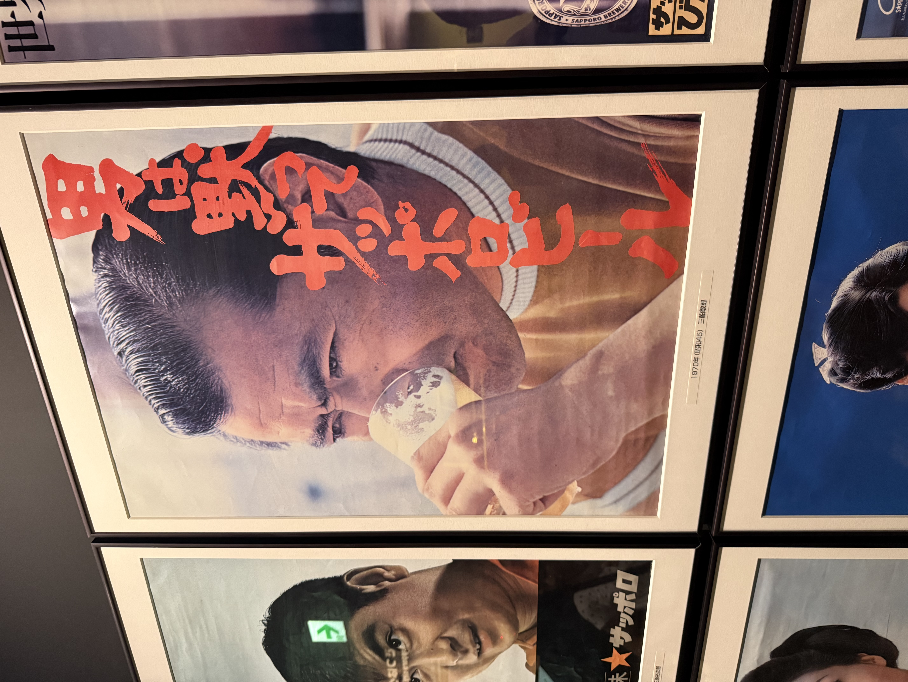
札幌市時計台
350円 高校生以下無料1878年にクラーク博士の構想で建設された日本最古の塔時計を持つ重要文化財。
内部は歴史を学べる資料館になってる。ここは完全に札幌駅からの徒歩圏内。
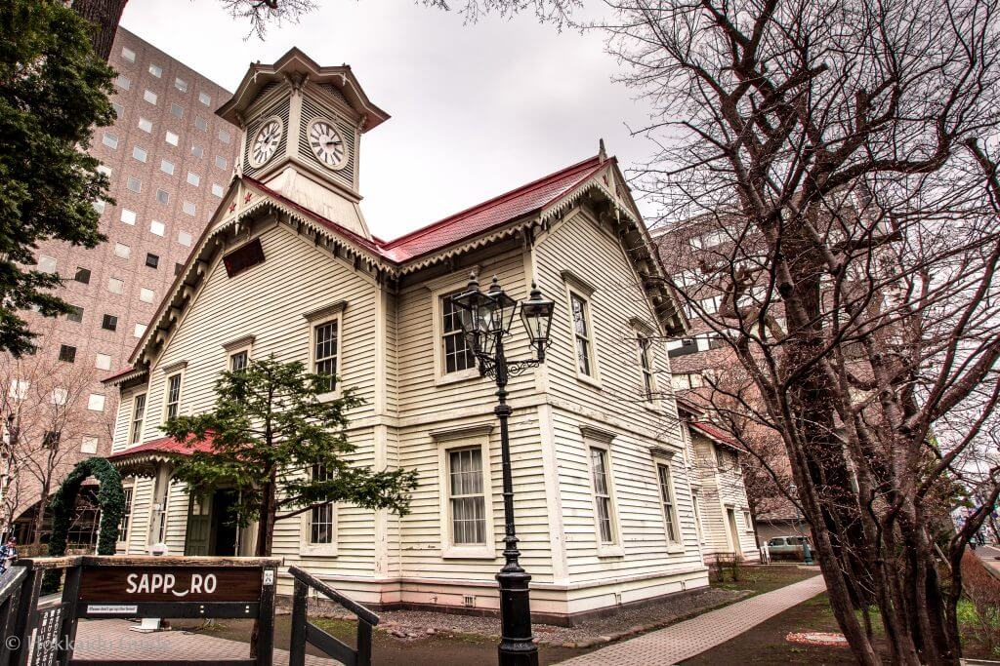
〇 狸小路商店街をふらふらするついでに
〇 札幌テレビ塔を見に行く途中に
〇 すすきのを散歩したいから通り道に
という人におすすめ。ただ、マジで小さいから立ち寄り程度って感じ。
狸小路商店街
札幌の商店街。小樽にも「小樽堺町通り商店街」っていうのがある。小樽の方は観光客用の商店街って感じ。札幌のは名古屋でいう大須みたいな雰囲気。

小樽 境町通り商店街 ➡ すげー長い金シャチ横丁って感じ
というイメージ。商店街歩くのが好きな人は良い。
TOPセイコーマート
セイコーマート。略してセコマ。
北海道のご当地コンビニ。一応、埼玉や茨城にもあるんだけど、基本的に北海道から外に進出しない。自社工場での製造や独自の物流ルートを築いて安さと品質を保ち続ける経営戦略スタイルのコンビニ。北海道ではファミマよりセコマ。セブンよりセコマである。
店内に必ずあるホットシェフはホットスナックや弁当を作って売る所。結構うまい。
どこにでもあるので、コンビニ行こうと思った時にでも行ってみるといい。
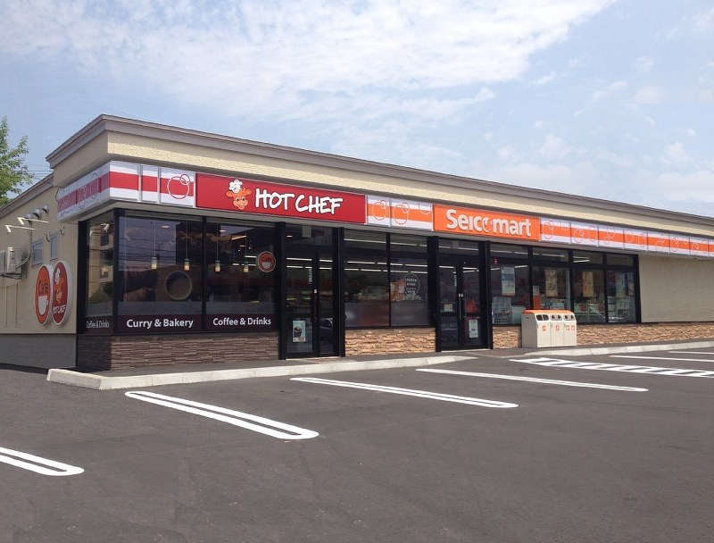
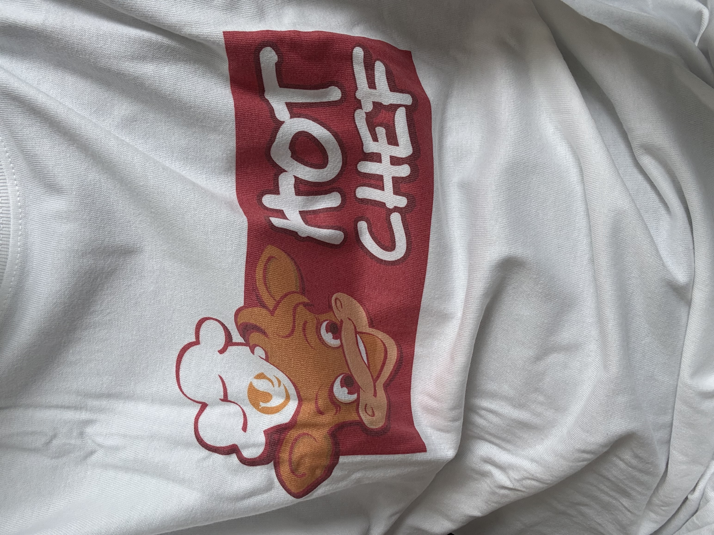